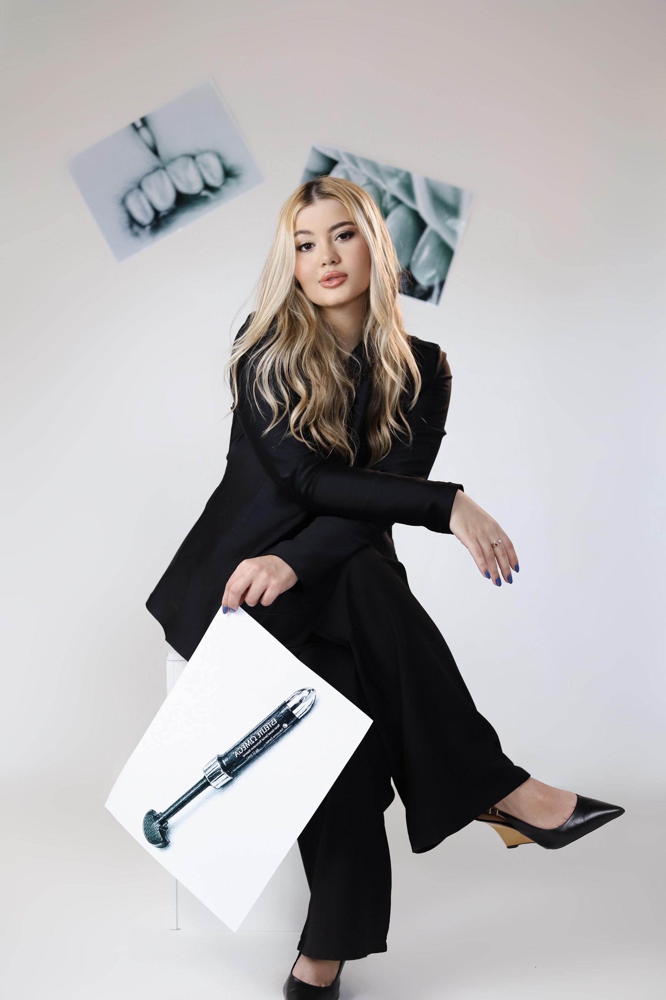
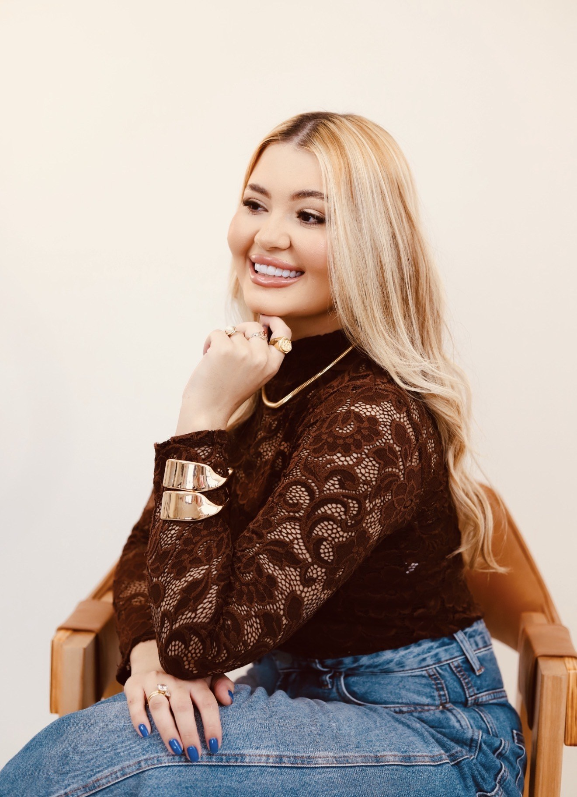
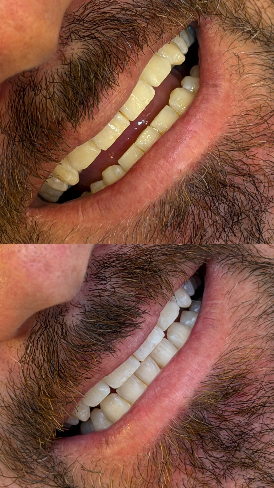
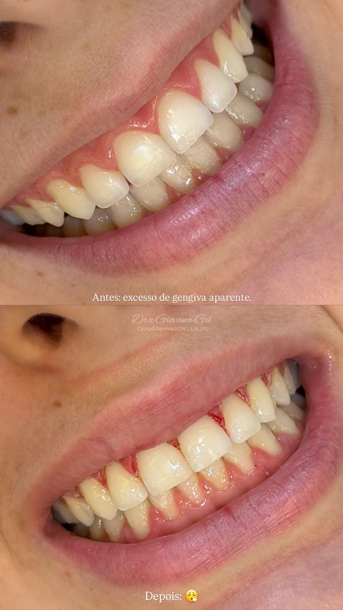
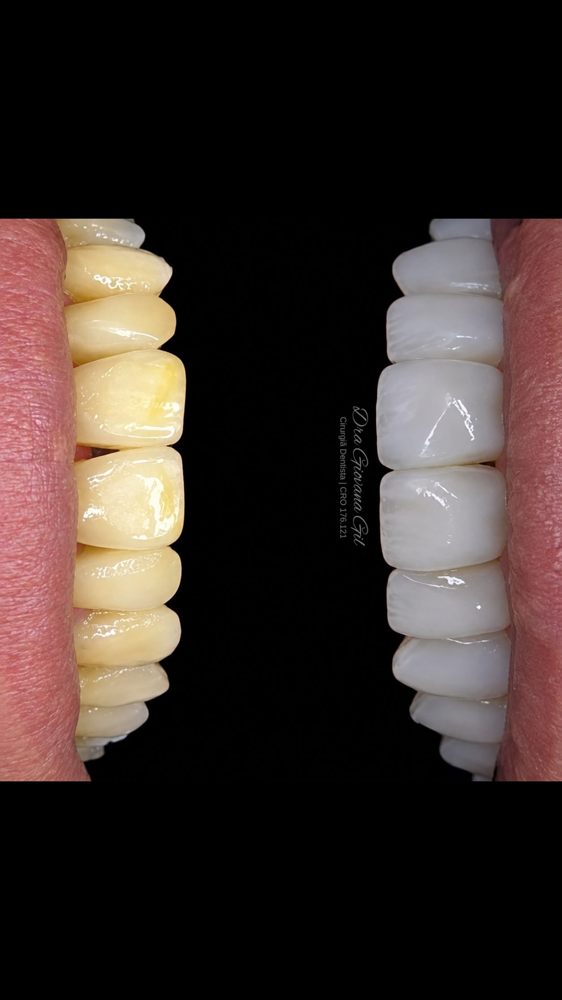
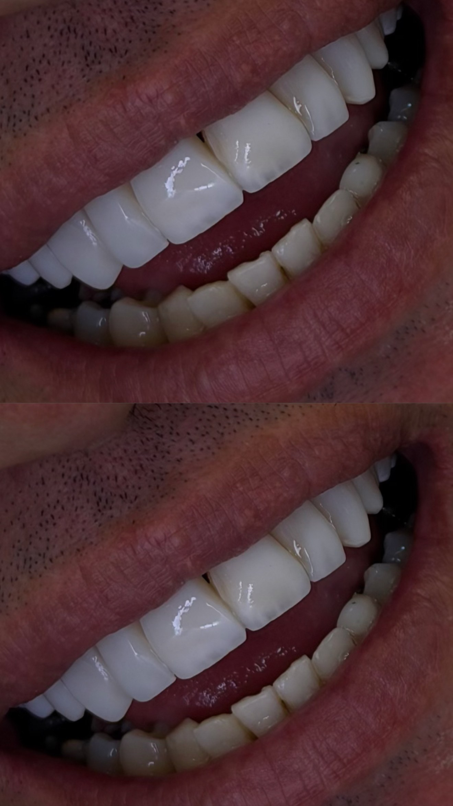

01
Lentes em resina composta
Planejamento estético de forma, proporção e cor, respeitando as características de cada sorriso.
Agendar avaliação ↗Estética dental com planejamento individualizado, atenção aos detalhes e respeito à naturalidade de cada sorriso.

Conheça as possibilidades de cuidado odontológico. A indicação é definida após avaliação clínica individual.
Planejamento estético de forma, proporção e cor, respeitando as características de cada sorriso.
Agendar avaliação ↗Tratamento para melhorar a tonalidade dos dentes, com avaliação e acompanhamento odontológico.
Agendar avaliação ↗Cuidados preventivos e orientações de higiene para ajudar a manter a saúde bucal em dia.
Agendar avaliação ↗Procedimento para recontorno gengival, quando indicado após avaliação periodontal e clínica.
Agendar avaliação ↗Reabilitação de dentes com materiais restauradores, buscando função, harmonia e naturalidade.
Agendar avaliação ↗Consulta para compreender suas necessidades, esclarecer dúvidas e conversar sobre opções de tratamento.
Agendar avaliação ↗
Sou cirurgiã-dentista e acredito que um bom resultado começa com escuta, planejamento e cuidado individualizado. Meu compromisso é oferecer uma experiência acolhedora, com atenção à saúde, à estética e à naturalidade.
Cada sorriso tem características únicas. Por isso, a avaliação é o primeiro passo para conversar sobre possibilidades e definir um plano adequado para você.
Entender suas expectativas.
Respeitar sua individualidade.
Priorizar saúde e segurança.
Da primeira avaliação ao acompanhamento, cada etapa é pensada com atenção.
Conversamos sobre suas expectativas e avaliamos as necessidades de saúde bucal.
Apresentamos as possibilidades e construímos um plano individualizado.
Orientações e cuidados para acompanhar a evolução e a manutenção do tratamento.
Alguns registros de casos e procedimentos odontológicos realizados.




Os resultados variam conforme as características e necessidades de cada paciente. Fotografias clínicas devem ser divulgadas somente com autorização expressa do paciente e observância das normas profissionais aplicáveis.

Um espaço de cuidado, acolhimento e atenção aos detalhes para tornar sua experiência odontológica mais tranquila.
Como chegar ↗Entre em contato para tirar dúvidas e consultar a disponibilidade de horários. Será um prazer receber você.
Falar pelo WhatsApp ↗